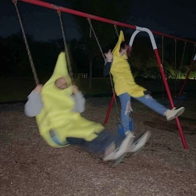

氫氣球
@allnightforlive
這個夢算是我遇見中蠻常見的一個連續夢。我還算能自控，但是沒有直接的意識。幾乎每一次我都會被拉或罰去做其他事情、要不是對方搞錯就是上司搞我。然後一直去爬山拍那張照片。也只有上一次那場夢我是真的拍到照片了。再次夢到卻沒有那張圖片了，所以需要去重新拍攝，一般應付說我上次傳了。
氫氣球
@allnightforlive
後面因為上一次夢境拍的圖片沒有儲存上傳，所以這一次要去重新拍攝，一邊應付上司，雖然他沒生氣過，但ㄧ生氣感覺我會死在這個夢裡。
這個夢最大的問題是，我如果不照做，我有可能被上司弄到無法從夢裡醒來。
總之就這樣⋯。後面因為在拍攝中逃不開所以被一個武士小怪弄死了。接著就醒過來了。